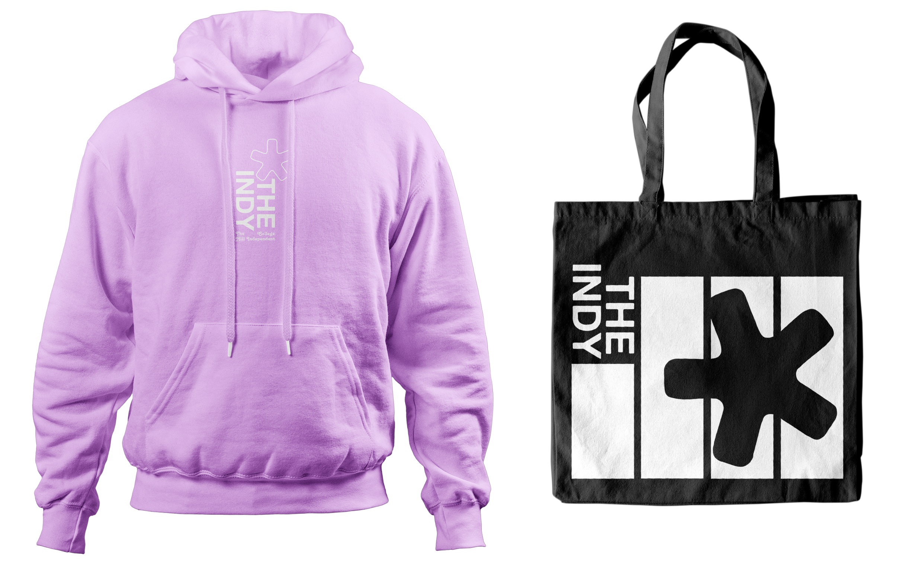
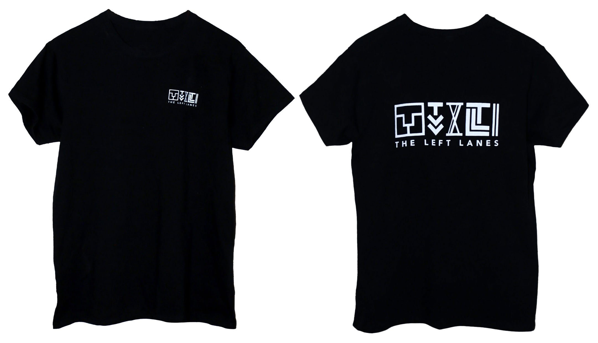

The Indy merch design
Merch design for Providence alt-weekly newspaper The College Hill Independent (The Indy). Includes a lavender hoodie with white print and a black tote bag with white print.



The Left Lanes merch design and production
Merch design for my indie band from Ann Arbor, MI. Includes a black tee with front and back white print, a tan hoodie with front and back black print, and a CD. All clothing hand-screenprinted, all logos by me.
City artwork on hoodie and CD by Ryan Kmieske

Live at the B-Side — poster
Poster design for a local concert I organized in Ann Arbor, MI. Used as 11x17" for physical flyering campaign, and as a digital poster for social media.

Present Company — poster>
Poster for a local show with headliner Present Company. Illustrations created in Adobe Illustrator. Alternative version used for social media campaign.

The Indy — hiring flyer
Flyer promoting an open hiring call for students of Brown University and RISD to work for the College Hill Independent, an alt-weekly newspaper in Providence, RI.
Font curation and layout, as well as greation of scanned graphic elements in India ink.

Live on Washington — application flyer
Flyer promoting an open application for a music festival, previously headlined by globally touring artists such as Vulpeck, TV Girl, Jamila Woods, and KLLO.

Get Low, Get Live — Poster
Poster for an event headlined by my band, aimed at raising funds for the Live on Washington Festival in Ann Arbor, MI.